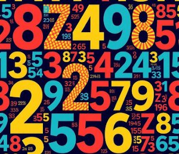

This problem is a Mooshak version of a SPOJ Problem.

A \(N \times N\) matrix is filled with numbers. BuggyD is analyzing the matrix, and he wants the sum of certain submatrices every now and then, so he wants a system where he can get his results from a query. Also, the matrix is dynamic, and the value of any cell can be changed with a command in such a system.Assume that initially, all the cells of the matrix are filled with 0. Design such a system for BuggyD. Read the input format for further details.
The first line contains a single integer \(N\), denoting the size of the matrix.
A list of commands follows, which will be in one of the following three formats:
Output one line for the answer to each SUM command.
There will be at most \(100\,000\) commands.
| Example Input | Example Output |
4 SET 0 0 1 SUM 0 0 3 3 SET 2 2 12 SUM 2 2 2 2 SUM 2 2 3 3 SUM 0 0 2 2 END |
1 12 12 13 |